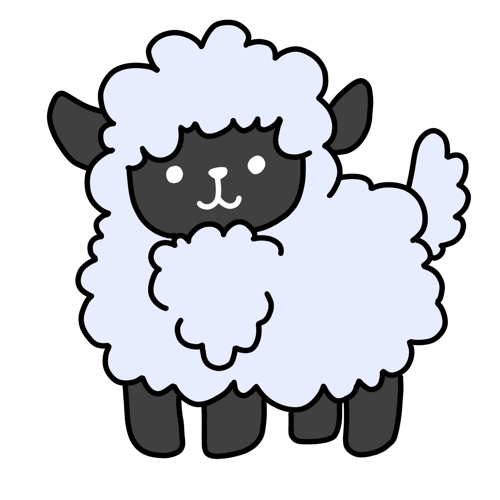

LES SYMBOLES DANS L'ALCHEMISTE
Les Moutons

Les moutons représentent les personnes qui sont content avec une vie qui n’a rien intéressant et aucune changements.
Ils sont aussi une méthode de critique par Coelho sur les personnes qui sont seulement intéressé par des possession matériaux. Les moutons sont seulement intéressés par où sera leur prochain champ pour manger et boire du l’eau, dans la même sens que les personnes sont trop concentrées sur des choses comme quand est-ce que c’est la prochaine fois où ils seront paye et l’auto qu’ils conduisent.
Finalement ils sont aussi un commentaire sur les personnes qui ont de la confiance aveugle, les moutons suivre Santiago n’importe d’où, et pays aucune attention quand un des moutons est toué ou vendu.
Alchimie
L’alchimie représente la quête de Santiago vers sa Légende Personnelle. Pour achever cette quête Santiago devrait débarrasser de ces impérities pour arriver à un état élevé d’être.
Les impérities comme:
- La désire d’être un berger riche
- La désire de resté avec Fatima
- La désire de rerecevoir la validation de ces parents
Au même temps, Santiago été aidé par l’alchimie, s'il n’a pas appris le langage du monde, il ne pourrait pas interpréter les signes des oiseaux pour protéger L’Oasis, et il n’aura pas eu l’alchimiste du l’oasis comme une guide.
Les Pyramides

Les pyramides symbolisent lin fin de la quête de Santiago pour sa légende personnel; S'il arrive aux pyramides il peut trouver son trésor et accomplir sa légende personnelle. Au même temps, ils ne sont pas le vrai but de la quête de Santiago, ils sont plutôt une méthode a symbolise les expériences du Santiago, son voyage, et comment il a grandi comme une personne. Ils ne sont pas le vrai trésor parce que le vrai trésor été sa famille.